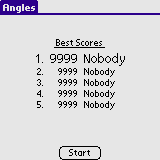
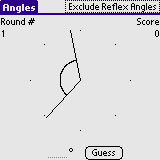

Angles is a simple learning tool. Angles takes you through 10 small quizzes where you have to measure or guess the angle between two lines. The difference between the actual angle and your guess is added to the your score.
Lower scores are best ...
Installation of Angles is like installing any other Palm OS program:
When the synchronization is done you will have a 'Angles' icon in the Unfiled category on your Palm PDA. Feel free to move Angles to another category.
When starting Angles you're met with the High Score (or actually, Low Score!) table. Lower scores are better. Tap the Start button to start the quiz.
There are 10 angles to guess. The actual angle to guess, is the span of the incomplete circle. Enter your guess in the field next to the Guess button. Press the Guess button when you think you know the right angle. Your score will be determined and you will go on to the next angle. After 10 angles, your performance will be evaluated ... Go for the lowest score!
By clicking the Exclude Reflex Angles or Include Reflex Angles you can select whether you want to exclude or include reflex angles (161-360 degrees).